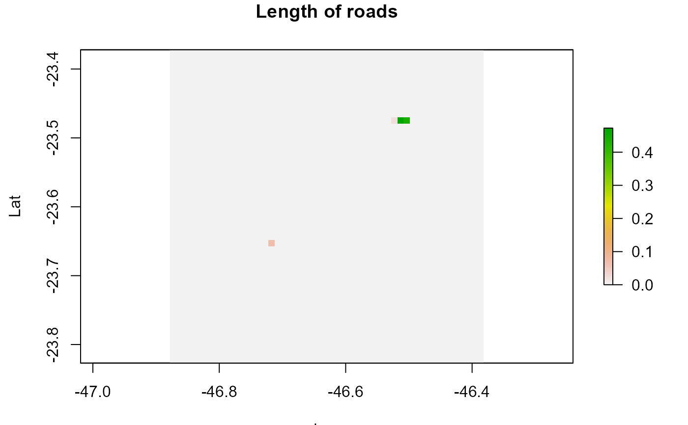

Create a emission distribution from 'sp' or 'sf' spatial lines data.frame or spatial lines.
There 3 modes available to create the emission grid: - using gridInfo function output (defoult) - using the patch to "wrfinput" (output from real.exe) file or "geo" for (output from geog.exe) - "sf" (and "sp") uses a grid in SpatialPolygons format
The variable is the column of the data.frame with contains the variable to be used as emissions, by defoult the idstribution taken into acount the lench distribution of lines into each grid cell and the output is normalized.
lineSource(
s,
grid,
as_raster = FALSE,
type = "info",
gcol = 100,
grow = 100,
variable = "length",
verbose = TRUE
)OpenstreetMap data avaliable https://www.openstreetmap.org/ and https://download.geofabrik.de/
SpatialLinesDataFrame of SpatialLines object
grid object with the grid information or filename
output format, TRUE for raster, FALSE for matrix
"info" (default), "wrfinput", "geo", "sp" or "sf" for grid type
grid points for a "sp" or "sf" type
grid points for a "sp" or "sf" type
variable to use, default is line length
display additional information
a raster object containing the spatial distribution of emissions
gridInfo and rasterSource
# \donttest{
roads <- osmar::get_osm(osmar::complete_file(),
source = osmar::osmsource_file(paste(system.file("extdata",
package="EmissV"),"/streets.osm.xz",sep="")))
#> Warning: number of columns of result is not a multiple of vector length (arg 1)
road_lines <- osmar::as_sp(roads,what = "lines")
# selecting only 2 roads
road_lines <- road_lines[1:2,]
roads <- sf::st_as_sf(road_lines)
d3 <- gridInfo(paste0(system.file("extdata", package = "EmissV"),"/wrfinput_d03"))
#> Grid information from: C:/Users/schuch/AppData/Local/Temp/Rtmp2H8oV2/temp_libpath3ae4412c5669/EmissV/extdata/wrfinput_d03
roadLength <- lineSource(roads,d3,as_raster=TRUE)
#> using length as emission variable
#> Number of lat points 51
#> Number of lon points 51
sp::spplot(roadLength,
scales = list(draw=TRUE),
ylab="Lat", xlab="Lon",main="Length of roads",
sp.layout=list("sp.lines", road_lines))

# }